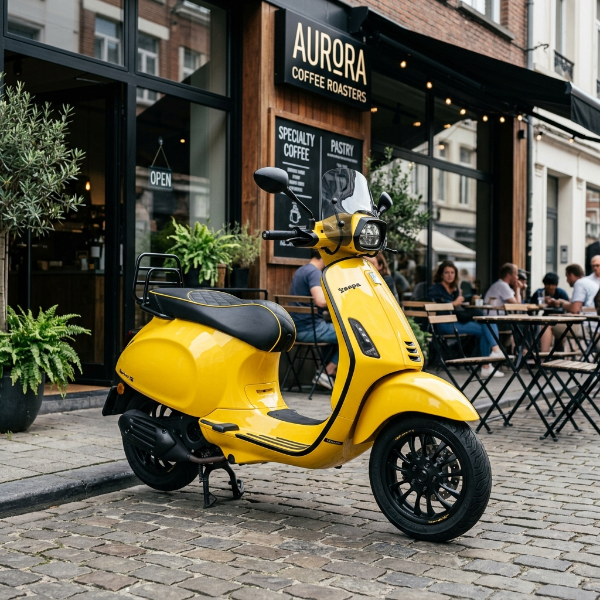

SCOOTER GARAGE - MODERN MATIC
Vespa Modern (Matic): Inovasi Teknologi & Era Style Baru

Vespa Modern Matic menggabungkan warisan desain Italia yang abadi dengan efisiensi dan kenyamanan teknologi masa kini. Dilengkapi mesin 4-tak berteknologi i-Get (Italian Green Experience Technology), pengereman ABS, serta sistem injeksi elektronik, Vespa matic menawarkan performa responsif dan ramah lingkungan untuk mobilitas harian perkotaan.
Vespa Modern bukan hanya sekadar sarana transportasi harian, tetapi telah menjadi statement fashion dan simbol gaya hidup urban yang penuh percaya diri.
Katalog Line-up Vespa Modern (Matic)
Klik salah satu tipe di bawah ini untuk melihat rincian spesifikasi teknis dan rekomendasi modifikasinya.